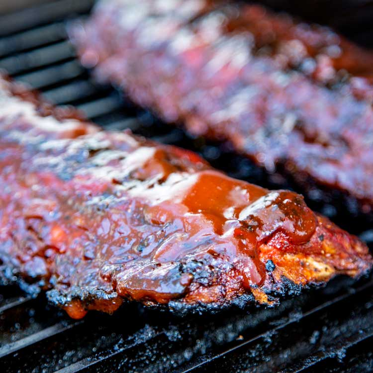

This is the best recipe for smokey babybacks - all you need is a smoker and 6 hours of patience.
- 1-2 racks of babyback ribs (silverskin removed)
- Yellow mustard
- Rib rub (I prefer Four Brothers, use your favorite)
- BBQ sauce (I like a Carolina-style sauce, but this is up to you)
- Apple juice
- Brown sugar
- Worcestershire sauce
- Honey
- The night before you plan to cook/eat, thouroughly coat the ribs with mustard.
- Apply your chosen rib rub, ensuring that every square inch of meat and bone is coated.
- Follow the 3-2-1 method, detailed here.
- Once the ribs are cooked to 203*F, apply your chosen BBQ sauce and return to the smoker for 10-15 minutes or until sauce is tacky.
Go Back